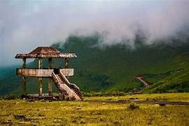

Araku Valley

Araku Valley is a hill station in Alluri Sitharama Raju district in the Indian state of Andhra Pradesh, lying 111 km west of Visakhapatnam city. It is a valley in the Eastern Ghats inhabited by different tribes, mainly Araku Tribes.Araku is located in the Eastern Ghats about 114 kilometres (71 mi) from Visakhapatnam, close to the Odisha state border. The Anantagiri and Sunkarimetta Reserved Forest, which are part of Araku Valley, are rich in biodiversity and are mined for bauxite.[2] Galikonda hill rising to a height of 5,000 feet (1,500 m) is amongst the highest peaks in Andhra Pradesh. The average rainfall is 1,700 millimetres (67 in), the bulk of which is received during June–October.[3] The altitude is about 1300 m above the sea level. The valley spreads around 36 km.[4]
Economy Coffee was introduced in Eastern Ghats of Andhra Pradesh in 1898 by British in Pamuleru valley in East Godavari district. Subsequently, it spread over to Araku Valley in the early 19th century. After independence, the Andhra Pradesh Forest Department developed coffee plantations in the valley.[5] In 1956, Coffee Board appointed Andhra Pradesh Girijan Cooperative Corporation Limited (GCC) for promoting coffee plantations in the valley through local tribal farmers.[clarification needed] In 1985, the plantations were handed to A.P. Forest Development Corporation and GCC promoted Girijan Coop. Plantation Development Corporation (GCPDC) exclusively to develop coffee plantations in tribal areas. All the plantations developed by GCC and GCPDC were handed over to the tribal farmers at two acres per family.[6] Apiculture farms have been widely spread in Araku, several types of flavoured honey is being made commercially.Transport A view of a passing train in foreground and the valley in background Araku is connected through both rail and road to Visakhapatnam. Araku railway station is located on the Kothavalasa-Kirandul railway line of Visakhapatnam division of the East Coast Railway, on the Indian Railways network. RTC Buses to Visakhapatnam every half an hour. In popular culture Many Telugu films including Happy Days, Katha, Darling, Life Is Beautiful, Parugu[7] and RRR[8] were shot in Araku.[citation needed]
Deomali
Deomali, is a mountain peak in the Chandragiri-Pottangi subrange of the Eastern Ghats. It is located near Koraput town in the Koraput district of Odisha, India.Deomali Peak, with an elevation of about 1,672 m, is the highest peak in the state of Odisha. It is situated near Doodhari village, Pottangi Panchayat division which is about 70 km from Koraput via Semiliguda.
Highest point in Odisha
Deomali Peak, with an elevation of about 1,672 m, is the highest peak in the state of Odisha. It is situated near Doodhari village, Pottangi Panchayat division which is about 70 km from Koraput via Semiliguda. It is surrounded by deep green forest, the peak is rich in flora and fauna. This hill range is rich in mineral resources such as bauxite, limestone and gemstones. Deomali is dotted with brooks and deep valleys, and inhabited by tribes such Kandhas, Parajas, Bhumia, Malis and Bhotias. It is not only a marvel for the tourists but also to the adventurous sports lovers for hang gliding, mountaineering and trekking. On this recent days Odisha tourism Department, is taking many development steps to popularize this peak amongst the travellers as a hot tourist spot by connecting the Tar roads, Hill top amenities centre, drinking water points on the hill top, watching towers for perfect view of the arena. Many waterfalls also found while heading for the top of hill.[3] Putsil Valley which is part of the Deomali Mountain Range is close by for visitors who wants to enjoy view scenic beauty.Lambasinge
Lambasingi (or Lammasingi) is a small village in the Eastern Ghats of Chintapalli Mandal of Alluri Sitharama Raju district in the Indian state of Andhra Pradesh. With an altitude that of 1000 m (3280 ft) above sea level, the area is cooler than the surrounding plains and is covered in moist deciduous forest cover. There are several coffee, pine, and eucalyptus plantations around the area and some small attempts to grow apple and strawberry.
he region was formerly densely covered in forests and known in the past to have supported tigers.[1] The large wildlife in the region includes gaur.[2] The region is known for its diversity of bird life which were studied by numerous ornithologists including Trevor Price, Dillon Ripley, Bruce Beehler and K. S. R. Krishna Raju.[3][4][5][6][7]Vanjangi
Foggy climate, trekking under rain showers, an adventurous route, interacting with tribals, and seeing the beautiful city of Vizag from 3,400 feet above sea level. Are you wondering where this place is? It is Vanjangi Hills, known as the place to see some of the most beautiful sunrises. Located near Paderu, in the Eastern Ghats of Andhra Pradesh of the Visakhapatnam Agency, Vanjangi is a must-visit place for all the mountain trekkers. Many of us use the phrase “on cloud nine” to describe our happiest moments. A trek to Vanjangi actually makes you feel as if you are standing on the clouds. Once you reach the spot, do not forget to shout out loud whatever you feel at the moment. Yo! Vizag shares some of the things to know before you visit the Vanjangi hills, especially this monsoon season.